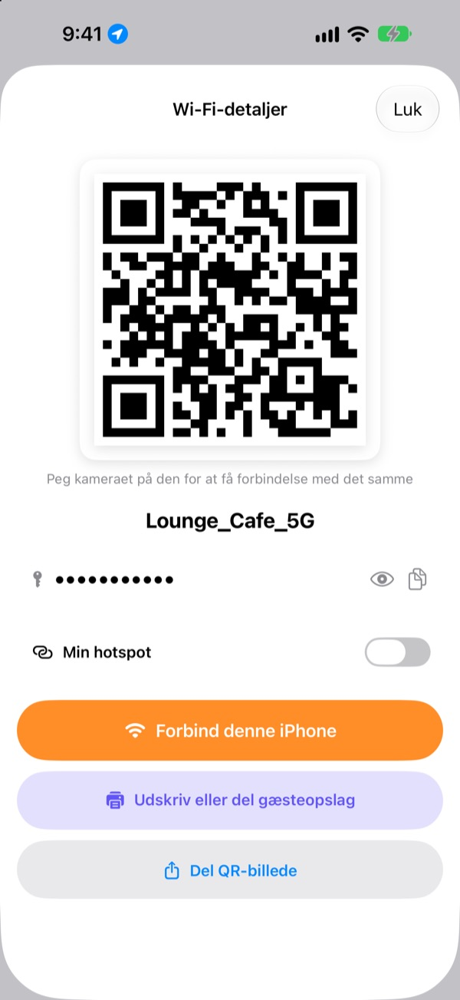
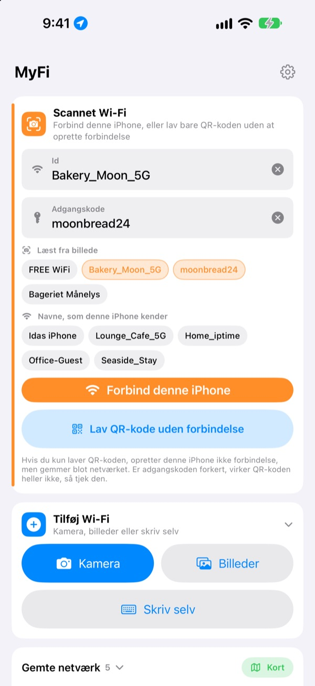
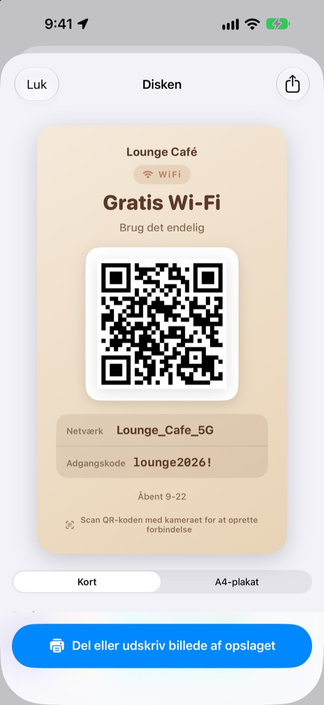
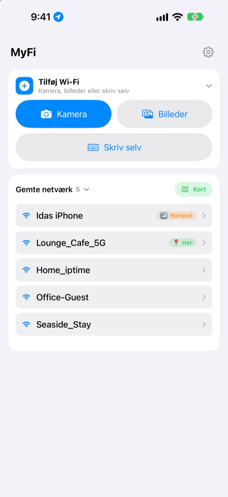

Slut med at læse koden op.
Vis en QR-kode.
Venner peger bare kameraet på den, så er de på. Opslaget på caféens væg? Ét billede, og din iPhone går på. Ingen tastefejl fra afskrivning.
Alle funktioner er gratis. iPhone med iOS 17 eller nyere.

Lav en QR-kode til dit Wi-Fi
Ret navn eller adgangskode, så opdateres opslaget med det samme. Peg en telefons kamera på det, så får du en rigtig forespørgsel om at gå på.
„Hvad var Wi-Fi-koden nu?“ Hvor mange gange i dag?
Du læser den op og får store og små bogstaver galt. Du skriver opslaget på væggen af og forveksler 0 og O. Og så forklarer du det hele igen. MyFi gør det til ét billede og én QR-kode.
Tag et billede, så er du på
Fotografér Wi-Fi-opslaget eller kvitteringen, eller vælg et billede. MyFi læser netværksnavn og adgangskode og forbinder din iPhone. Er der også en QR-kode på opslaget, læser den den først, så oplysningerne er helt præcise.
Er teksten utydelig, så træk et stykke fra billedet ind i feltet til navn eller adgangskode.

Lav og udskriv et gæsteopslag
Vælg et af 7 temaer, og tilføj navn, logo og linjer som åbningstider. Vælg kort eller stående A4-plakat, gem det som billede, eller udskriv det med det samme via AirPrint.
Hav flere opslag, ét til hvert sted eller bord, og ret dem når som helst.

Steder, du vender tilbage til, står øverst
Netværk, du går på eller deler, gemmes sammen med stedet. Kommer du tilbage, står netværket øverst, og alle gemte steder kan ses på et kort.
Læg QR-koden til dit mest delte Wi-Fi som widget på hjemmeskærmen eller låseskærmen. Spørger en gæst, viser du bare skærmen.

Kom i gang på tre trin
- 1
Åbn appen
Den beder én gang om lokalitet, fordi iOS kun fortæller navnet på dit nuværende Wi-Fi til apps med den adgang.
- 2
Fotografér eller skriv
Tag et billede af et opslag, eller skriv adgangskoden til dit eget Wi-Fi én gang.
- 3
Gå på eller vis frem
Forbind din iPhone, eller vis QR-koden til den andens kamera.
Hvor finder du hvad
- Gå på fra et billede af et opslag
Tilføj Wi-Fi, såKameraellerBilleder, såForbind denne iPhone- Skriv oplysningerne selv
Tilføj Wi-Fi, såSkriv selv- Lav kun en QR-kode
Lav QR-kode uden forbindelse- Send QR-koden i en besked
- Tryk på et gemt netværk, så
Del QR-billede - Gæsteopslag
- Tryk på et gemt netværk, så
Udskriv eller del gæsteopslag - Dit hotspot som QR-kode
- Tryk på et gemt netværk, og slå
Min hotspottil - Gå på eller del med ét swipe
- Swipe til højre i listen for at gå på, til venstre for at dele
- Se gemte steder
Kortved siden afGemte netværk- QR-kode på hjemmeskærmen
- Hold fingeren på hjemmeskærmen, og tilføj MyFi-widgetten
Wi-Fi QR
Du kan også åbne QR-koden direkte med Siri eller appen Genveje.
Alle funktioner er gratis
Gratis
- Gå på Wi-Fi fra et billede
- Lav QR-koder og del dem som billede
- Gæsteopslag i 7 temaer, som kort eller A4-plakat, udskrevet med AirPrint
- Widgets til hjemmeskærm og låseskærm
- Kort over dine gemte Wi-Fi
- Ingen reklamer, ingen konto
Drikkepenge (frivilligt)
- Kan du lide appen, kan du støtte udviklingen med drikkepenge
- Drikkepenge låser ikke noget op. Uden dem har du stadig alle funktioner
Drikkepenge er en lille engangsbetaling.
Intet abonnement og ingen betalte funktioner.
Ofte stillede spørgsmål
Hvorfor skal jeg selv skrive adgangskoden?
iOS lader ingen app læse de Wi-Fi-adgangskoder, der er gemt på enheden. Derfor finder MyFi netværksnavnet, og du skriver adgangskoden én gang. Derefter bruger appen den gemte.
Jeg kan ikke se navnet på mit nuværende Wi-Fi.
iOS giver kun Wi-Fi-navnet til apps med adgang til lokalitet. Tillad MyFi under Indstillinger › Anonymitet & sikkerhed › Lokalitetstjenester. Lokalitet bruges kun til at læse netværksnavnet og genkende steder, du vender tilbage til.
Navn eller adgangskode blev læst forkert.
Gå tættere på, og tag billedet lige. Er det stadig forkert, så træk det rigtige stykke fra billedet ind i feltet, eller ret det selv. Har opslaget en Wi-Fi-QR-kode, læser MyFi den og udfylder de præcise oplysninger.
Hvilke opslag kan den læse?
Den klarer sig bedst med opslag på engelsk eller koreansk med betegnelser som ID, PW, SSID, Network eller Password. Selv uden betegnelser finder den linjen, der ligner en adgangskode. En Wi-Fi-QR-kode på opslaget læses præcist, uanset sprog.
Hvordan går andre på med min QR-kode?
På iPhone og Android peger de bare det indbyggede kamera på koden og trykker på forespørgslen. De behøver ingen app.
Kan andre se min adgangskode?
QR-koden indeholder standard Wi-Fi-loginoplysninger. Du vælger altid selv, om du deler den, og du kan skjule adgangskoden på gæsteopslaget.
Hvorfor kan jeg ikke gå på mit eget hotspot?
Din iPhones internetdeling er jo selve telefonen, og den kan ikke forbinde sig til sig selv. Slå Min hotspot til, så behandler MyFi det som en QR-kode, du deler ud.
Hvor ender mine Wi-Fi-oplysninger?
MyFi har ingen server. Netværksnavne, adgangskoder, resultater fra billeder og lokaliteter behandles og gemmes kun på din enhed. Ingen reklamer eller sporing. Appen sender kun anonym brugsstatistik og fejlrapporter til Apple iCloud, så den kan blive rettet.
Hvilke enheder virker den på?
iPhone med iOS 17 eller nyere. Appen findes på 24 sprog.
Spørgsmål eller feedback? Skriv til leeo@kakao.com. Jeg svarer som regel inden for 2 til 3 dage.